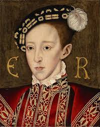
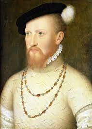

The Tudor's
back

King Edward VI
Reign: 1547 - 1553
Key Facts.
Birth: 12th Oct 1537, Hampton Court.
Father: Henry VIII.
Mother: Jane Seymour.
Accession: 28th Jan 1547.
Coronation: 20th Feb 1547.
Succeeded by: His cousin Lady Jane Grey, for 9 days; afterwards Mary I.
Greatest Achievement: Foundation of grammer schools in several towns.
Key Dates.
- 10th Sept 1547: Battle of Pinkie.
- 1549: First book of common prayer.
- Oct 1549: John Dudley, Earl of Wrwick, replaces Edward Seymour, Duke of Somerset as Lord Protector.
- 1552: Second book of common prayer.
- Death: 6th July 1553, London.
Britannica Link
Sir Edward Seymour, Lord Protector

© 2022 All rights reserved | Designed by Graham Williamson.